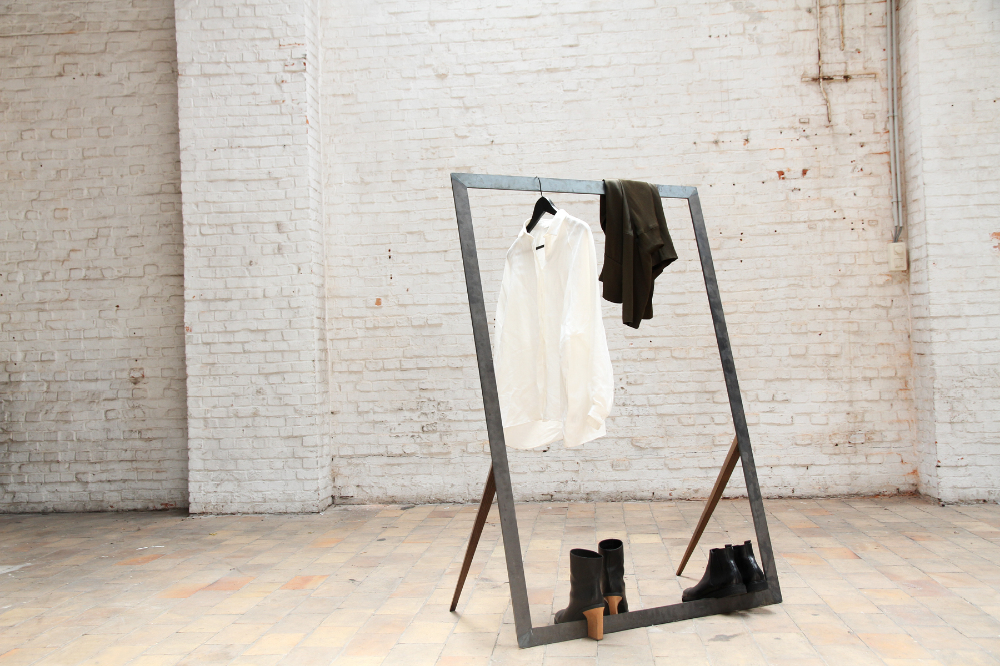
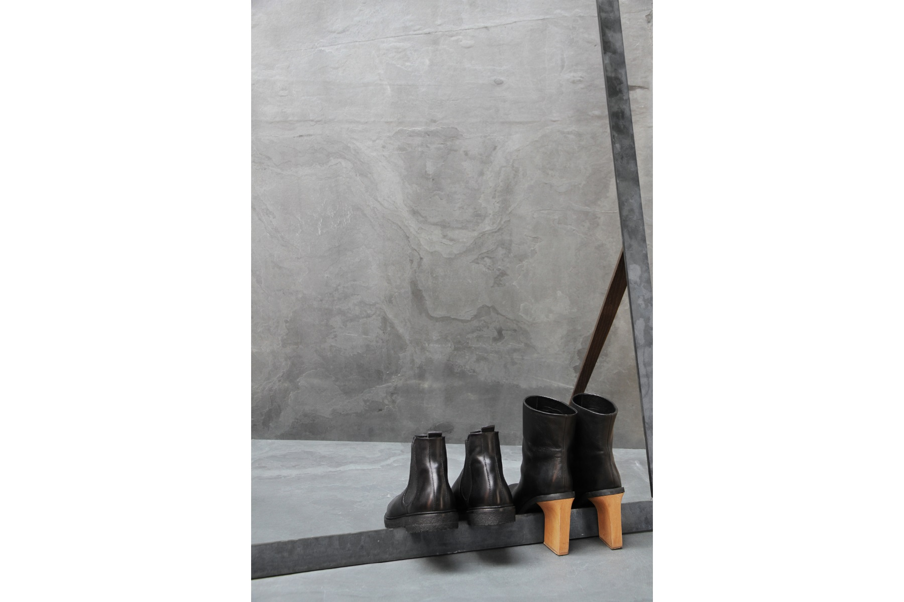
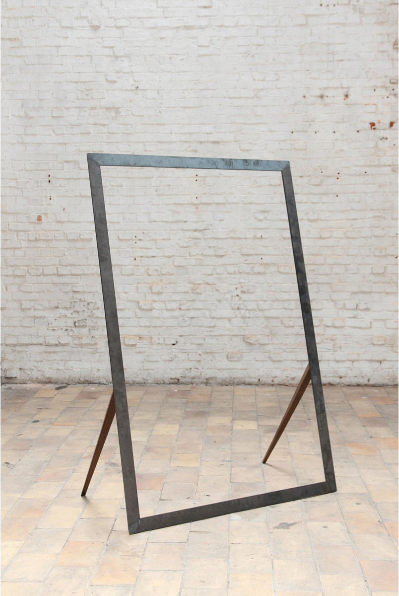
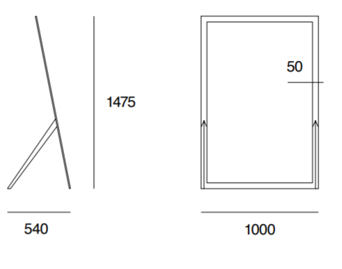

- 
- 
- 
| kleerstaander | ||||
|---|---|---|---|---|
| storagespace | 100% blauwstaal *10% hout |
|||
Het object Kleerstaander, dat oorspronkelijk werd ontworpen voor een pop-up project, vormt door zijn elegante ontwerp tevens de perfecte eyecatcher in een residentiële omgeving. Het roestvaste blauwstalen kader omlijst letterlijk de kledingstukken, waardoor het ontwerp naast een praktische ook een esthetische functie krijgt. De elegantie van de verjongende eikenhouten pootjes, geïnspireerd op het Mid-Century modern design, zorgt voor een mooi contrast met het ruwe karakter van het blauwstaal. Om zo weinig mogelijk verlies te genereren bij de productie, zijn de afmetingen van het Kleerstaander gebaseerd op de standaardmaten van de gebruikte staalplaten, zonder in te boeten aan functionaliteit. *Alle creaties kunnen, in samenspraak met de designers, gecustomized worden wat betreft afmetingen, materiaalkeuze en afwerking |
Het zichtbare ruwe karakter van het blauwstaal ligt niet alleen volledig in de lijn van de collectie, het betreft hier tevens een staalsoort die minder gevoelig is voor roest dan gelijken.
Deze relatieve roestvastheid wordt nog eens verhoogd door het aanbrengen van een kleurloze waxlaag, die de eigenheid van het blauwglanzende staal tevens volledig bewaard.” De keuze voor eikenhout past volledig binnen de filosofie van stuf. Enerzijds betreft het een lokale, sterke houtsoort die bekend staat om zijn duurzaamheid, anderzijds is het één van de weinige houtsoorten waarop we de techniek van het roken konden toepassen.
Roken biedt het voordeel dat het hout in sneltempo in een natuurlijk verouderingsproces terechtkomt, waardoor verdere veroudering wordt tegengegaan |
 *Alle creaties kunnen, in samenspraak met de designers, gecustomized worden wat betreft afmetingen, materiaalkeuze en afwerking |
||